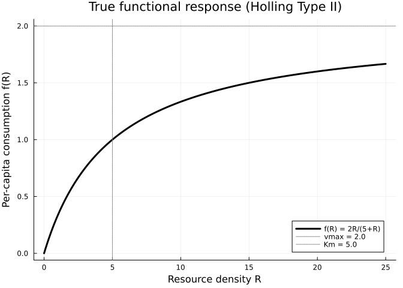
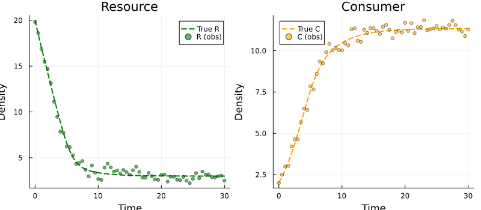
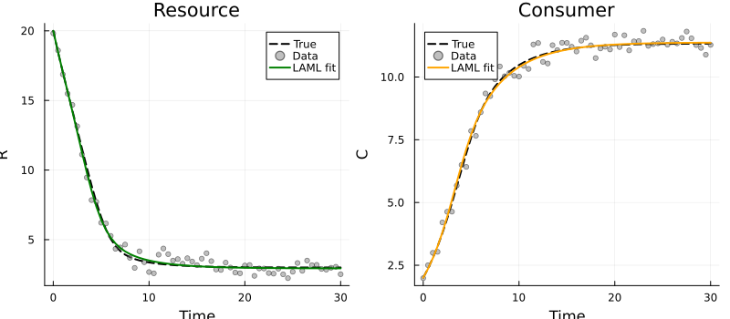
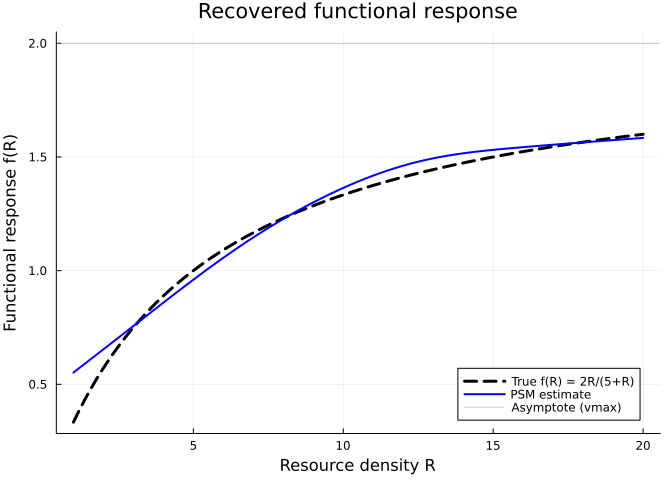
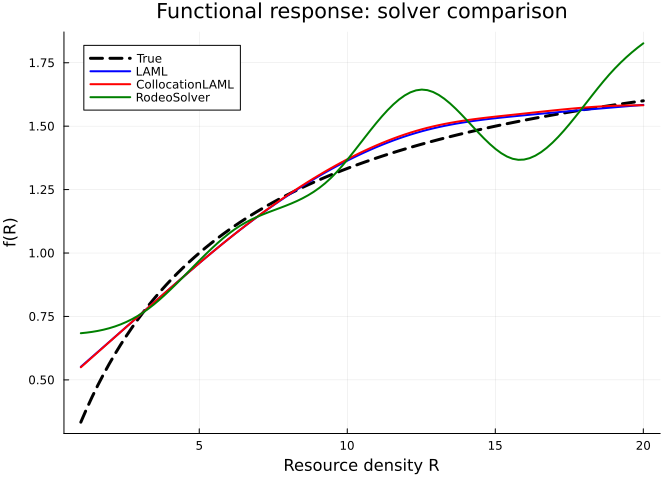
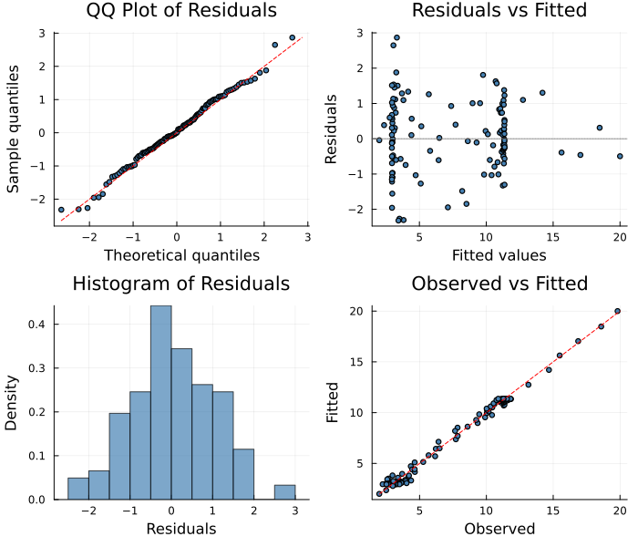
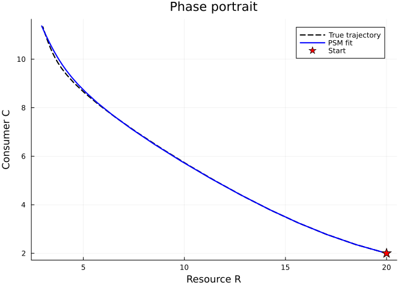

Recovering Functional Responses: The Rosenzweig-MacArthur Model
Overview
A central question in ecology is: what is the functional form of predator–prey interactions? The functional response — how per-capita prey consumption varies with prey density — determines the stability, oscillations, and persistence of ecological communities. Classical forms include:
- Type I (linear): $f(R) = aR$
- Type II (saturating): $f(R) = \frac{aR}{1 + ahR}$ (Holling disc equation)
- Type III (sigmoidal): $f(R) = \frac{aR^2}{1 + ahR^2}$
In practice, the true functional form is rarely known. Partially specified models let us estimate $f(R)$ nonparametrically from population time series data, without assuming a specific mathematical form.
This vignette demonstrates how to recover a saturating functional response from a two-species consumer–resource system using PartiallySpecifiedModels.jl.
Setup
using PartiallySpecifiedModels
using PartiallySpecifiedModels: solve
using OrdinaryDiffEq
using Plots
using Random
Random.seed!(42)TaskLocalRNG()The Consumer–Resource Model
Consider a consumer ($C$) feeding on a resource ($R$) with continuous replenishment (e.g., a chemostat or open ecosystem):
\[\begin{aligned} \frac{dR}{dt} &= a(R_0 - R) - f(R) \cdot C \\ \frac{dC}{dt} &= \varepsilon \cdot f(R) \cdot C - d \cdot C \end{aligned}\]
where:
\[a\]
= resource turnover rate\[R_0\]
= resource supply concentration\[f(R)\]
= functional response (unknown)\[\varepsilon\]
= conversion efficiency\[d\]
= consumer death rate
The true functional response is Holling Type II: $f(R) = \frac{v_{\max} R}{K_m + R} = \frac{2R}{5 + R}$.
Visualise the true functional response
R_grid = range(0, 25, length=200)
f_true = [2.0 * R / (5.0 + R) for R in R_grid]
plot(R_grid, f_true, lw=3, color=:black,
xlabel="Resource density R", ylabel="Per-capita consumption f(R)",
title="True functional response (Holling Type II)",
label="f(R) = 2R/(5+R)", legend=:bottomright)
hline!([2.0], ls=:dot, color=:gray, label="vmax = 2.0")
vline!([5.0], ls=:dot, color=:gray, label="Km = 5.0")
Generate data
function cr_true!(du, u, p, t)
R, C = u
f = 2.0 * R / (5.0 + R)
du[1] = 0.5 * (20.0 - R) - f * C
du[2] = 0.4 * f * C - 0.3 * C
end
u0 = [20.0, 2.0]
tspan = (0.0, 30.0)
prob_ode = ODEProblem(cr_true!, u0, tspan)
sol_ode = OrdinaryDiffEq.solve(prob_ode, Tsit5(), saveat=0.5)
data_t = sol_ode.t
σ_R, σ_C = 0.5, 0.3
data = max.(hcat(sol_ode[1,:], sol_ode[2,:]) .+
hcat(σ_R .* randn(length(data_t)), σ_C .* randn(length(data_t))), 0.01)
p1 = plot(sol_ode.t, sol_ode[1,:], label="True R", lw=2, color=:green, ls=:dash)
scatter!(p1, data_t, data[:, 1], label="R (obs)", ms=3, alpha=0.6, color=:green)
p2 = plot(sol_ode.t, sol_ode[2,:], label="True C", lw=2, color=:orange, ls=:dash)
scatter!(p2, data_t, data[:, 2], label="C (obs)", ms=3, alpha=0.6, color=:orange)
plot(p1, p2, layout=(1, 2), size=(800, 350),
xlabel="Time", ylabel="Density", title=["Resource" "Consumer"])
Define the PSM
The functional response $f(R)$ is left unspecified and modelled with a B-spline:
function consumer_resource!(du, u, p, t)
R, C = u
fR = p.f(max(R, 0.01))
du[1] = 0.5 * (20.0 - R) - max(fR, 0.0) * C
du[2] = 0.4 * max(fR, 0.0) * C - 0.3 * C
end
approx_f = BSplineApproximator(:f, (0.0, 22.0), 8; initial=1.0)
prob = PSMProblem(consumer_resource!, u0, tspan, [approx_f];
data_times=data_t, data_values=data,
obs_to_state=[1, 2],
known_params=(a=0.5, R0=20.0, ε=0.4, d=0.3),
solver=Tsit5())PSMProblem{typeof(consumer_resource!), Vector{Float64}, Gaussian, Tsit5{typeof(OrdinaryDiffEqCore.trivial_limiter!), typeof(OrdinaryDiffEqCore.trivial_limiter!), Static.False}}(consumer_resource!, [20.0, 2.0], (0.0, 30.0), BSplineApproximator[BSplineApproximator(:f, (0.0, 22.0), 8, PartiallySpecifiedModels.var"#6#7"{Float64}(1.0))], [0.0, 0.5, 1.0, 1.5, 2.0, 2.5, 3.0, 3.5, 4.0, 4.5 … 25.5, 26.0, 26.5, 27.0, 27.5, 28.0, 28.5, 29.0, 29.5, 30.0], [19.81832125927411 1.9844056499497738; 18.59217322955963 2.5007756990768337; … ; 3.0544691681141445 10.889505761680244; 2.5190470640325087 11.279979969880175], [1.0 1.0; 1.0 1.0; … ; 1.0 1.0; 1.0 1.0], [1, 2], (a = 0.5, R0 = 20.0, ε = 0.4, d = 0.3), Gaussian(), Tsit5{typeof(OrdinaryDiffEqCore.trivial_limiter!), typeof(OrdinaryDiffEqCore.trivial_limiter!), Static.False}(OrdinaryDiffEqCore.trivial_limiter!, OrdinaryDiffEqCore.trivial_limiter!, static(false)), Dict{Symbol, Any}(), false, Float64[], nothing)Fit with LAML
IRLS+LAML: 8 params, 122 data, 1 smooth terms
Initial θ: [3.658e-5]
Iter 0: obj=2237.89, SS=4475.73, θ=[3.66e-5]
Iter 1: obj=1984.74, SS=3969.44, θ=[3.66e-5]
Iter 2: obj=1618.14, SS=3235.98, θ=[3.66e-5]
Iter 3: obj=1241.63, SS=2483.11, θ=[3.66e-5]
LAML init: ρ = [-10.0]
LAML-FS iter 1: σ̂²=1.789e-01 λ = [1.035e-5]
LAML-FS iter 2: σ̂²=1.601e-01 λ = [6.368e-6]
LAML-FS iter 3: σ̂²=1.571e-01 λ = [5.781e-6]
LAML-FS iter 4: σ̂²=1.566e-01 λ = [5.686e-6]
LAML-FS iter 5: σ̂²=1.565e-01 λ = [5.671e-6]
LAML-FS iter 10: σ̂²=1.565e-01 λ = [5.668e-6]
LAML-FS converged at iteration 10
LAML-Newton iter 1: V=9.852444e+01 |grad|=2.360e-08
Iter 4: obj=35.9612, SS=71.8034, θ=[5.67e-6]
LAML init: ρ = [-10.0]
LAML-FS iter 1: σ̂²=4.310e-01 λ = [8.443e-6]
LAML-FS iter 2: σ̂²=3.026e-01 λ = [1.307e-6]
LAML-FS iter 3: σ̂²=2.107e-01 λ = [3.695e-7]
LAML-FS iter 4: σ̂²=1.775e-01 λ = [1.388e-7]
LAML-FS iter 5: σ̂²=1.601e-01 λ = [7.731e-8]
LAML-FS iter 10: σ̂²=1.510e-01 λ = [5.763e-8]
LAML-FS iter 15: σ̂²=1.510e-01 λ = [5.761e-8]
LAML-FS converged at iteration 15
LAML-Newton iter 1: V=8.431429e+01 |grad|=4.704e-08
LAML init: ρ = [-10.0]
LAML-FS iter 1: σ̂²=1.654e-01 λ = [2.048e-5]
LAML-FS iter 2: σ̂²=1.563e-01 λ = [1.316e-5]
LAML-FS iter 3: σ̂²=1.523e-01 λ = [1.044e-5]
LAML-FS iter 4: σ̂²=1.505e-01 λ = [9.354e-6]
LAML-FS iter 5: σ̂²=1.497e-01 λ = [8.917e-6]
LAML-FS iter 10: σ̂²=1.492e-01 λ = [8.62e-6]
LAML-FS iter 18: σ̂²=1.492e-01 λ = [8.617e-6]
LAML-FS converged at iteration 18
LAML-Newton iter 1: V=9.505718e+01 |grad|=5.334e-08
LAML init: ρ = [-10.0]
LAML-FS iter 1: σ̂²=1.569e-01 λ = [9.438e-5]
LAML-FS iter 2: σ̂²=1.597e-01 λ = [0.0001136]
LAML-FS iter 3: σ̂²=1.606e-01 λ = [0.0001187]
LAML-FS iter 4: σ̂²=1.609e-01 λ = [0.0001199]
LAML-FS iter 5: σ̂²=1.609e-01 λ = [0.0001202]
LAML-FS iter 10: σ̂²=1.609e-01 λ = [0.0001202]
LAML-FS iter 11: σ̂²=1.609e-01 λ = [0.0001202]
LAML-FS converged at iteration 11
LAML-Newton iter 1: V=9.510433e+01 |grad|=6.305e-08
LAML init: ρ = [-9.026]
LAML-FS iter 1: σ̂²=1.634e-01 λ = [0.0001459]
LAML-FS iter 2: σ̂²=1.643e-01 λ = [0.0001668]
LAML-FS iter 3: σ̂²=1.650e-01 λ = [0.0001834]
LAML-FS iter 4: σ̂²=1.655e-01 λ = [0.0001961]
LAML-FS iter 5: σ̂²=1.659e-01 λ = [0.0002055]
LAML-FS iter 10: σ̂²=1.666e-01 λ = [0.0002248]
LAML-FS iter 20: σ̂²=1.667e-01 λ = [0.0002284]
LAML-FS iter 30: σ̂²=1.667e-01 λ = [0.0002285]
LAML-Newton iter 1: V=9.333077e+01 |grad|=8.655e-07
LAML init: ρ = [-8.384]
LAML-FS iter 1: σ̂²=1.724e-01 λ = [0.0002811]
LAML-FS iter 2: σ̂²=1.735e-01 λ = [0.0003147]
LAML-FS iter 3: σ̂²=1.741e-01 λ = [0.0003365]
LAML-FS iter 4: σ̂²=1.745e-01 λ = [0.000351]
LAML-FS iter 5: σ̂²=1.748e-01 λ = [0.0003606]
LAML-FS iter 10: σ̂²=1.752e-01 λ = [0.0003779]
LAML-FS iter 20: σ̂²=1.753e-01 λ = [0.0003807]
LAML-FS iter 30: σ̂²=1.753e-01 λ = [0.0003808]
LAML-Newton iter 1: V=8.562042e+01 |grad|=3.623e-07
LAML init: ρ = [-7.873]
LAML-FS iter 1: σ̂²=1.332e-01 λ = [0.001954]
LAML-FS iter 2: σ̂²=1.347e-01 λ = [0.00972]
LAML-FS iter 3: σ̂²=1.359e-01 λ = [0.02925]
LAML-FS iter 4: σ̂²=1.375e-01 λ = [0.03133]
LAML-FS iter 5: σ̂²=1.376e-01 λ = [0.03129]
LAML-FS iter 7: σ̂²=1.376e-01 λ = [0.03129]
LAML-FS converged at iteration 7
LAML-Newton iter 1: V=1.095456e+02 |grad|=1.351e-07
Iter 10: obj=12.9478, SS=16.4563, θ=[0.0313]
LAML init: ρ = [-3.464]
LAML-FS iter 1: σ̂²=1.382e-01 λ = [0.03124]
LAML-FS iter 2: σ̂²=1.382e-01 λ = [0.03124]
LAML-FS iter 3: σ̂²=1.382e-01 λ = [0.03124]
LAML-FS iter 4: σ̂²=1.382e-01 λ = [0.03124]
LAML-FS converged at iteration 4
LAML-Newton iter 1: V=1.097727e+02 |grad|=1.929e-07
LAML init: ρ = [-3.466]
LAML-FS iter 1: σ̂²=1.382e-01 λ = [0.03177]
LAML-FS iter 2: σ̂²=1.383e-01 λ = [0.03174]
LAML-FS iter 3: σ̂²=1.383e-01 λ = [0.03175]
LAML-FS iter 4: σ̂²=1.383e-01 λ = [0.03175]
LAML-FS iter 5: σ̂²=1.383e-01 λ = [0.03175]
LAML-FS converged at iteration 5
LAML-Newton iter 1: V=1.098107e+02 |grad|=3.682e-08
LAML init: ρ = [-3.45]
LAML-FS iter 1: σ̂²=1.383e-01 λ = [0.03159]
LAML-FS iter 2: σ̂²=1.382e-01 λ = [0.0316]
LAML-FS iter 3: σ̂²=1.382e-01 λ = [0.0316]
LAML-FS iter 4: σ̂²=1.382e-01 λ = [0.0316]
LAML-FS iter 5: σ̂²=1.382e-01 λ = [0.0316]
LAML-FS converged at iteration 5
LAML-Newton iter 1: V=1.098459e+02 |grad|=1.791e-08
LAML init: ρ = [-3.455]
LAML-FS iter 1: σ̂²=1.382e-01 λ = [0.03159]
LAML-FS iter 2: σ̂²=1.382e-01 λ = [0.03159]
LAML-FS iter 3: σ̂²=1.382e-01 λ = [0.03159]
LAML-FS iter 4: σ̂²=1.382e-01 λ = [0.03159]
LAML-FS converged at iteration 4
LAML-Newton iter 1: V=1.098475e+02 |grad|=2.012e-08
LAML init: ρ = [-3.455]
LAML-FS iter 1: σ̂²=1.382e-01 λ = [0.03159]
LAML-FS iter 2: σ̂²=1.382e-01 λ = [0.03159]
LAML-FS iter 3: σ̂²=1.382e-01 λ = [0.03159]
LAML-FS converged at iteration 3
LAML-Newton iter 1: V=1.098477e+02 |grad|=3.001e-08
Converged at iter 15 (objective stable)
Final: data_loss = 16.3205, penalty = 0.268609, EDF = 3.94
Final θ: [0.03159]
Data loss (SS): 16.32
EDF: 3.94Fitted trajectories
p1 = plot(sol_ode.t, sol_ode[1,:], label="True", lw=2, color=:black, ls=:dash,
xlabel="Time", ylabel="R", title="Resource")
scatter!(p1, data_t, data[:, 1], label="Data", ms=3, alpha=0.5, color=:gray)
plot!(p1, data_t, sol.fitted_values[:, 1], label="LAML fit", lw=2, color=:green)
p2 = plot(sol_ode.t, sol_ode[2,:], label="True", lw=2, color=:black, ls=:dash,
xlabel="Time", ylabel="C", title="Consumer")
scatter!(p2, data_t, data[:, 2], label="Data", ms=3, alpha=0.5, color=:gray)
plot!(p2, data_t, sol.fitted_values[:, 2], label="LAML fit", lw=2, color=:orange)
plot(p1, p2, layout=(1, 2), size=(800, 350))
Recovered functional response
The key result: we recover the shape of the Holling Type II functional response without assuming any parametric form:
R_eval = range(1.0, 20.0, length=100)
f_true_vals = [2.0 * R / (5.0 + R) for R in R_eval]
f_est = [sol.unknown_functions[:f](R) for R in R_eval]
plot(R_eval, f_true_vals, label="True f(R) = 2R/(5+R)", lw=3, color=:black, ls=:dash,
xlabel="Resource density R", ylabel="Functional response f(R)",
title="Recovered functional response", legend=:bottomright)
plot!(R_eval, f_est, label="PSM estimate", lw=2, color=:blue)
hline!([2.0], ls=:dot, color=:gray, alpha=0.5, label="Asymptote (vmax)")
The PSM correctly recovers:
- Near-linear increase at low R (the “attack rate” region)
- Saturation at high R (the “handling time” limitation)
- No assumption about the Type II form was needed
Comparison Across Solvers
sol_coll = solve(prob, CollocationLAML(maxiters=50, verbose=false, n_continuation=6))
sol_rodeo = solve(prob, RodeoSolver(n_steps=200, n_deriv=3, maxiters=200, verbose=false))
p_compare = plot(R_eval, f_true_vals, label="True", lw=3, color=:black, ls=:dash,
xlabel="Resource density R", ylabel="f(R)",
title="Functional response: solver comparison")
plot!(p_compare, R_eval, f_est, label="LAML", lw=2, color=:blue)
plot!(p_compare, R_eval, [sol_coll.unknown_functions[:f](R) for R in R_eval],
label="CollocationLAML", lw=2, color=:red)
plot!(p_compare, R_eval, [sol_rodeo.unknown_functions[:f](R) for R in R_eval],
label="RodeoSolver", lw=2, color=:green)
p_compare
Ecological Interpretation
The nonparametric estimate of $f(R)$ allows biologists to:
- Test functional response hypotheses — Does the estimated curve match Type I, II, or III?
- Detect departures from classical forms — e.g., a Type II that starts declining at very high densities (interference)
- Predict dynamics under novel conditions — the fitted PSM can be simulated forward
This is fundamentally different from fitting parametric models (e.g., assuming Holling Type II and estimating $a$ and $h$), because the PSM approach makes no assumption about the functional form and lets the data speak.
Diagnostic Plots
A standard 4-panel diagnostic display assesses residual behaviour for the consumer–resource fit.
using PartiallySpecifiedModels: appraise
diag = appraise(sol)
p_qq = scatter(diag.qq_theoretical, diag.qq_sample,
xlabel="Theoretical quantiles", ylabel="Sample quantiles",
title="QQ Plot of Residuals", ms=3, legend=false, color=:steelblue)
mn, mx = extrema(vcat(diag.qq_theoretical, diag.qq_sample))
plot!(p_qq, [mn, mx], [mn, mx], color=:red, ls=:dash, label="")
p_rf = scatter(diag.fitted, diag.residuals,
xlabel="Fitted values", ylabel="Residuals",
title="Residuals vs Fitted", ms=3, legend=false, color=:steelblue)
hline!(p_rf, [0], color=:gray, ls=:dot)
p_hist = histogram(diag.residuals, normalize=:pdf,
xlabel="Residuals", ylabel="Density",
title="Histogram of Residuals", legend=false, color=:steelblue, alpha=0.7)
p_of = scatter(diag.observed, diag.fitted,
xlabel="Observed", ylabel="Fitted",
title="Observed vs Fitted", ms=3, legend=false, color=:steelblue)
mn2, mx2 = extrema(vcat(diag.observed, diag.fitted))
plot!(p_of, [mn2, mx2], [mn2, mx2], color=:red, ls=:dash, label="")
plot(p_qq, p_rf, p_hist, p_of, layout=(2, 2), size=(700, 600))
Durbin-Watson: 1.377, 1.826Phase Portrait
plot(sol_ode[1,:], sol_ode[2,:], label="True trajectory", lw=2, color=:black, ls=:dash,
xlabel="Resource R", ylabel="Consumer C",
title="Phase portrait")
plot!(sol.fitted_values[:, 1], sol.fitted_values[:, 2], label="PSM fit", lw=2, color=:blue)
scatter!([u0[1]], [u0[2]], label="Start", ms=8, color=:red, marker=:star5)